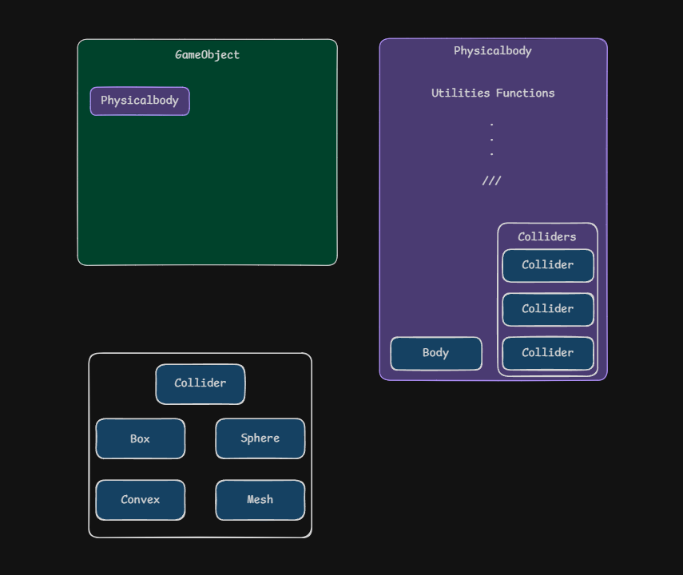

Forme
Le Collider construit sa shape Jolt et garde ses offsets locaux.
Jolt Physics
Mon objectif n'était pas seulement d'intégrer Jolt, mais de construire une couche moteur qui relie scène, éditeur, gameplay et simulation de manière cohérente, jusqu'à une voiture pilotable.
Le socle
Dans EnigmaEngine, un objet ne parle jamais directement à Jolt. J'ai introduit une couche centrale, Physicalbody, qui agit comme le manager physique local d'un GameObject. Elle centralise les colliders, le body Jolt actif, le type de mouvement, la synchronisation des transforms et les remontées de collision vers le gameplay.

Cette classe ne remplace pas les autres composants, elle les coordonne. Le Collider décrit une forme, le Body porte la référence Jolt et son BodyID, et le Physicalbody relie les deux pour produire une seule représentation physique par objet.
Le Collider construit sa shape Jolt et garde ses offsets locaux.
Le Body crée et détruit le corps dans le PhysicsSystem à partir de la shape finale.
Le Physicalbody reconstruit, met à jour et redistribue l'état physique autour de l'objet.
Formes
Tous les colliders dérivent d'une base commune qui gère le parent, la position et la rotation locales et la shape Jolt. Chaque type construit ensuite sa propre forme : BoxCollider, SphereCollider, MeshCollider et ConvexCollider.
Quand un objet porte plusieurs colliders, je ne crée pas plusieurs petits corps indépendants. Le Physicalbody les regroupe dans une shape composée, puis crée ou reconstruit le body à partir de ce volume unique. Dès qu'un collider change de taille ou de position, la reconstruction est relancée automatiquement.

userData un pointeur vers son Physicalbody. C'est ce lien qui permet ensuite de remonter d'un contact Jolt jusqu'à l'objet du moteur et à ses scripts.Façade composant
Le Rigidbody est le composant que l'on ajoute dans l'éditeur. Il expose ce qu'on attend d'un objet dynamique (masse, gravité, motion type statique / kinematic / dynamique, mode trigger, vitesses et forces), mais toutes ces opérations sont exécutées par le Physicalbody. Le Rigidbody expose, le Physicalbody exécute : la logique physique n'existe qu'à un seul endroit.
Un cas limite est géré au passage : un objet qui reçoit un Rigidbody sans aucun collider reçoit un EmptyCollider, pour qu'il existe toujours un support physique minimal.
Scène ↔ simulation
La physique tourne en pas fixe, le rendu à la fréquence de l'écran. Il faut donc synchroniser dans les deux sens.
PhysicsSystem::Update simule, parallélisé par le job system de Jolt.Physicalbody.// Physicalbody::UpdateParentTransform(alpha)
gameObject->transform.SetPosition(Math::Vector3D::Lerp(previousPositionAfterPhysics, positionAfterPhysics, alpha));
gameObject->transform.SetRotation(Math::Quaternion::Slerp(previousRotationAfterPhysics, rotationAfterPhysics, alpha));Transform visuel. Sinon la scène affiche une position pendant que Jolt en simule une autre. UpdatePhysicsTransform renvoie donc la modification vers le body.Vers le gameplay
Les callbacks de Jolt sont appelés pendant la simulation, potentiellement depuis plusieurs threads. Je n'y appelle donc jamais de code gameplay : le ContactListener se contente d'empiler les paires de bodies, et la distribution se fait après le pas physique, sur le thread principal.
ContactListener.contactsAdded, Persisted ou Removed.UpdateCallBacks() retrouve les deux Physicalbody via le userData.OnCollisionEnter, Stay ou Exit.for (Scripting::IScript* script : pb->collisionManager->*scriptList)
(script->*callback)(*pb, *pb2);
for (Scripting::IScript* script : pb2->collisionManager->*scriptList)
(script->*callback)(*pb2, *pb);Une même fonction traite les trois listes grâce à des pointeurs sur membres. C'est aussi un choix d'API assumé : contrairement à Unity, je n'ai pas séparé OnCollision et OnTrigger. Un body devient capteur avec SetTrigger, et l'interface côté script reste plus compacte.
La brique la plus visible
Le VehicleController construit une voiture complète au-dessus des briques véhicule de Jolt, et pas un simple rigidbody poussé par des forces. Il assemble le body, les quatre roues, les suspensions, les barres anti-roulis, le différentiel, le moteur, la boîte de vitesses et la contrainte véhicule. Les scripts n'ont plus qu'à envoyer les entrées du joueur et lire le régime, la vitesse ou le rapport engagé.
| Groupe | Réglages exposés dans l'éditeur |
|---|---|
| Général | masse, angle de roulis max, transmission FWD / RWD / AWD, boîte auto ou manuelle |
| Suspensions | raideur avant / arrière, fréquence, amortissement |
| Moteur | couple max, régime min / max, inertie, amortissement angulaire |
| Roues | rayon, largeur, empattement, voie, angle de braquage, couple de freinage |
La difficulté : une grande partie de ces réglages ne peut pas être modifiée sur un véhicule Jolt déjà construit. Chaque setter relance donc une reconstruction propre de la voiture (DeleteCar() puis CreateCar()), ce qui permet de régler la conduite en direct depuis l'inspecteur, en mode play. Les roues sont dessinées en gizmos pour vérifier leur placement.
// Scripting API
void SetDriverInput(float inForward, float inRight, float inBrake, float inHandBrake) const;
float GetRPM() const;
float GetSpeed() const; // km/h
int GetCurrentGear();GetRPM() alimente directement le son moteur : voir la page Audio.Recul
Le filtrage repose sur deux couches fixes (statique / mobile). C'est suffisant pour la démo, mais la prochaine étape est un système de layers configurable à l'exécution, comme dans Unity.
Les scripts n'ont pas encore accès aux raycasts et overlaps de Jolt. Les exposer ouvrirait la voie à l'IA des adversaires et à des déclencheurs plus fins.